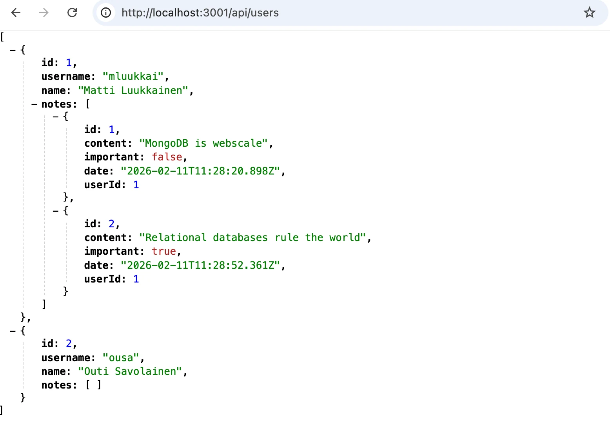

الجزء 13: قواعد البيانات العلائقية
جداول الربط والاستعلامات
بنية التطبيق
حتى الآن، كتبنا كل الشيفرة في الملف نفسه. لنُنظّم التطبيق الآن بشكل أفضل قليلاً. لننشئ البنية المجلدية والملفات التالية:
index.js
util
config.js
db.js
models
index.js
note.js
controllers
notes.js
محتويات الملفات كما يلي. يتولّى الملف utils/config.js التعامل مع متغيرات البيئة:
require('dotenv').config()
module.exports = {
DATABASE_URL: process.env.DATABASE_URL,
PORT: process.env.PORT || 3001,
}
دور الملف index.js هو تهيئة التطبيق وتشغيله:
const express = require('express')
const app = express()
const { PORT } = require('./util/config')
const { connectToDatabase } = require('./util/db')
const notesRouter = require('./controllers/notes')
app.use(express.json())
app.use('/api/notes', notesRouter)
const start = async () => {
await connectToDatabase()
app.listen(PORT, () => {
console.log(`Server running on port ${PORT}`)
})
}
start()
بدء تشغيل التطبيق مختلف قليلاً عما رأيناه سابقاً، لأننا نريد التأكد من إنشاء الاتصال بقاعدة البيانات بنجاح قبل بدء التشغيل الفعلي.
يحتوي الملف util/db.js على الشيفرة اللازمة لتهيئة قاعدة البيانات:
const Sequelize = require('sequelize')
const { DATABASE_URL } = require('./config')
const sequelize = new Sequelize(DATABASE_URL, {
dialectOptions: {
ssl: {
require: true,
rejectUnauthorized: false
}
},
})
const connectToDatabase = async () => {
try {
await sequelize.authenticate()
console.log('connected to the database')
} catch (err) {
console.log('failed to connect to the database')
return process.exit(1)
}
return null
}
module.exports = { connectToDatabase, sequelize }
تُحفظ الملاحظات في النموذج المقابل للجدول المطلوب تخزينه في الملف models/note.js
const { Model, DataTypes } = require('sequelize')
const { sequelize } = require('../util/db')
class Note extends Model {}
Note.init({
id: {
type: DataTypes.INTEGER,
primaryKey: true,
autoIncrement: true
},
content: {
type: DataTypes.TEXT,
allowNull: false
},
important: {
type: DataTypes.BOOLEAN
},
date: {
type: DataTypes.DATE
}
}, {
sequelize,
underscored: true,
timestamps: false,
modelName: 'note'
})
module.exports = Note
الملف models/index.js شبه عديم الفائدة في هذه المرحلة، إذ لا يوجد سوى نموذج واحد في التطبيق. وعندما نبدأ بإضافة نماذج أخرى إلى التطبيق، سيصبح الملف أكثر فائدة لأنه سيُغني عن استيراد الملفات التي تعرّف النماذج الفردية في بقية التطبيق.
const Note = require('./note')
Note.sync()
module.exports = {
Note
}
تجد معالجة المسارات المرتبطة بالملاحظات في الملف controllers/notes.js:
const router = require('express').Router()<br><br>const { Note } = require('../models')<br><br>router.get('/', async (req, res) => {<br> const notes = await Note.findAll()<br> res.json(notes)<br>})<br><br>router.post('/', async (req, res) => {<br> try {<br> const note = await Note.create({... req.body, date: new Date()})<br> res.json(note)<br> } catch(error) {<br> return res.status(400).json({ error })<br> }<br>})<br><br>router.get('/:id', async (req, res) => {<br> const note = await Note.findByPk(req.params.id)<br> if (note) {<br> res.json(note)<br> } else {<br> res.status(404).end()<br> }<br>})<br><br>router.delete('/:id', async (req, res) => {<br> const note = await Note.findByPk(req.params.id)<br> if (note) {<br> await note.destroy()<br> }<br> res.status(204).end()<br>})<br><br>router.put('/:id', async (req, res) => {<br> const note = await Note.findByPk(req.params.id)<br> if (note) {<br> note.important = req.body.important<br> await note.save()<br> res.json(note)<br> } else {<br> res.status(404).end()<br> }<br>})<br><br>module.exports = router
بنية التطبيق جيدة الآن. لكننا نلاحظ أن معالجات المسارات التي تتعامل مع ملاحظة واحدة تحتوي على قدر من الشيفرة المكررة، إذ تبدأ جميعها بالسطر الذي يبحث عن الملاحظة المطلوب التعامل معها:
const note = await Note.findByPk(req.params.id)
لنُعِد هيكلة ذلك إلى middleware خاص بنا ونطبّقه في معالجات المسارات:
const noteFinder = async (req, res, next) => {
req.note = await Note.findByPk(req.params.id)
if (!req.note) {
return res.status(404).end()
}
next()
}
router.get('/:id', noteFinder, async (req, res) => {
res.json(req.note)
})
router.put('/:id', noteFinder, async (req, res) => {
req.note.important = req.body.important
await req.note.save()
res.json(req.note)
})
router.delete('/:id', noteFinder, async (req, res) => {
await req.note.destroy()
res.status(204).end()
})
تتلقّى معالجات المسارات الآن ثلاث معاملات: الأول نص يعرّف المسار، والثاني هو الوسيط noteFinder الذي عرّفناه سابقاً، والذي يجلب الملاحظة من قاعدة البيانات ويضعها في الحقل note من الكائن req. وقد تخلّصنا من قدر صغير من النسخ واللصق، ونحن راضون!
تجد الشيفرة الحالية للتطبيق كاملة على GitHub، في الفرع step2.
5. بنية أفضل
6. مزيد من الإعجابات
7. معالجة أخطاء نظيفة
إدارة المستخدمين
بعد ذلك، سنضيف جدول users إلى قاعدة البيانات، والذي سيخزّن مستخدمي التطبيق. إضافة إلى ذلك، سنضيف إمكانية إنشاء المستخدمين وتسجيل الدخول القائم على الرمز، كما نفّذنا في الجزء 4. وللتبسيط، ننفّذ ذلك الآن بحيث تكون كلمة المرور نفسها secret لجميع المستخدمين.
النموذج الذي يعرّف المستخدمين في الملف models/user.js مباشر وبسيط
const { Model, DataTypes } = require('sequelize')
const { sequelize } = require('../util/db')
class User extends Model {}
User.init({
id: {
type: DataTypes.INTEGER,
primaryKey: true,
autoIncrement: true
},
username: {
type: DataTypes.STRING,
unique: true,
allowNull: false
},
name: {
type: DataTypes.STRING,
allowNull: false
},
}, {
sequelize,
underscored: true,
timestamps: false,
modelName: 'user'
})
module.exports = User
الحقل username مضبوط ليكون فريداً. كان يمكن أساساً استخدام username كمفتاح رئيسي للجدول. لكننا قرّرنا إنشاء المفتاح الرئيسي كحقل منفصل بقيمة عددية id.
يتوسّع الملف models/index.js قليلاً:
const Note = require('./note')
const User = require('./user')
Note.sync()
User.sync()
module.exports = {
Note, User
}
معالجات المسارات في الملف controllers/users.js التي تتولّى إنشاء مستخدم جديد وعرض جميع المستخدمين لا تحتوي على شيء مثير
const router = require('express').Router()
const { User } = require('../models')
router.get('/', async (req, res) => {
const users = await User.findAll()
res.json(users)
})
router.post('/', async (req, res) => {
try {
const user = await User.create(req.body)
res.json(user)
} catch(error) {
return res.status(400).json({ error })
}
})
router.get('/:id', async (req, res) => {
const user = await User.findByPk(req.params.id)
if (user) {
res.json(user)
} else {
res.status(404).end()
}
})
module.exports = router
معالج الموجّه الذي يتعامل مع تسجيل الدخول (الملف controllers/login.js) كما يلي:
const jwt = require('jsonwebtoken')
const router = require('express').Router()
const { SECRET } = require('../util/config')
const User = require('../models/user')
router.post('/', async (request, response) => {
const body = request.body
const user = await User.findOne({
where: {
username: body.username
}
})
const passwordCorrect = body.password === 'secret'
if (!(user && passwordCorrect)) {
return response.status(401).json({
error: 'invalid username or password'
})
}
const userForToken = {
username: user.username,
id: user.id,
}
const token = jwt.sign(userForToken, SECRET)
response
.status(200)
.send({ token, username: user.username, name: user.name })
})
module.exports = router
سيُرفَق طلب POST باسم مستخدم وكلمة مرور. أولاً، يُجلب الكائن المقابل لاسم المستخدم من قاعدة البيانات باستخدام نموذج User مع الدالة findOne :
const user = await User.findOne({
where: {
username: body.username
}
})
من الطرفية، يمكننا أن نرى أن عبارة SQL تقابل استدعاء الدالة
SELECT "id", "username", "name"
FROM "users" AS "User"
WHERE "User". "username" = 'mluukkai';
إذا وُجد المستخدم وكانت كلمة المرور صحيحة (أي secret لجميع المستخدمين)، فسيُعاد jsonwebtoken يحتوي على معلومات المستخدم في الاستجابة. وللقيام بذلك، نثبّت الاعتمادية
npm install jsonwebtoken
يتوسّع الملف index.js قليلاً
const notesRouter = require('./controllers/notes')
const usersRouter = require('./controllers/users')
const loginRouter = require('./controllers/login')
app.use(express.json())
app.use('/api/notes', notesRouter)
app.use('/api/users', usersRouter)
app.use('/api/login', loginRouter)
تجد الشيفرة الحالية للتطبيق كاملة على GitHub، في الفرع step3.
الربط بين الجداول
يمكن الآن إضافة مستخدمين إلى التطبيق ويمكن للمستخدمين تسجيل الدخول، لكن هذه الميزة في حد ذاتها ليست مفيدة جداً بعد. نودّ إضافة ميزتين: ألا يتمكن إلا المستخدم المسجَّل دخوله من إضافة الملاحظات، وأن ترتبط كل ملاحظة بالمستخدم الذي أنشأها. وللقيام بذلك، نحتاج إلى إضافة مفتاح أجنبي (foreign key) إلى جدول notes .
عند استخدام Sequelize، يمكن تعريف المفتاح الأجنبي بتعديل الملف models/index.js كما يلي
const Note = require('./note')
const User = require('./user')
User.hasMany(Note)
Note.belongsTo(User)
Note.sync({ alter: true })
User.sync({ alter: true })
module.exports = {
Note, User
}
هكذا إذن نعرّف وجود علاقة واحد إلى متعدد بين users وnotes. كما غيّرنا خيارات استدعاءات sync بحيث تتوافق الجداول في قاعدة البيانات مع التغييرات التي تُجرى على تعريفات النماذج. ويبدو مخطط قاعدة البيانات كما يلي:
defaultdb=> \d notes
Table "public.notes"
Column | Type | Collation | Nullable | Default
-----------+--------------------------+-----------+----------+-----------------------------------
id | integer | | not null | nextval('notes_id_seq'::regclass)
content | text | | not null |
important | boolean | | |
date | timestamp with time zone | | |
user_id | integer | | |
Indexes:
"notes_pkey" PRIMARY KEY, btree (id)
Foreign-key constraints:
"notes_user_id_fkey" FOREIGN KEY (user_id) REFERENCES users(id) ON UPDATE CASCADE ON DELETE SET NULL
defaultdb=> \d users
Table "public.users"
Column | Type | Collation | Nullable | Default
----------+------------------------+-----------+----------+-----------------------------------
id | integer | | not null | nextval('users_id_seq'::regclass)
username | character varying(255) | | not null |
name | character varying(255) | | not null |
Indexes:
"users_pkey" PRIMARY KEY, btree (id)
"users_username_key" UNIQUE CONSTRAINT, btree (username)
"users_username_key1" UNIQUE CONSTRAINT, btree (username)
Referenced by:
TABLE "notes" CONSTRAINT "notes_user_id_fkey" FOREIGN KEY (user_id) REFERENCES users(id) ON UPDATE CASCADE ON DELETE SET NULL
أُنشئ المفتاح الأجنبي user_id في جدول notes ، وهو يشير إلى صفوف من جدول users .
يبدو في هذه المرحلة أننا فعلنا كل شيء بشكل صحيح وأن المفتاح الأجنبي أُنشئ بنجاح. لكن إذا نُفّذت هذه الشيفرة على قاعدة بيانات جديدة تماماً، فسنصطدم بمشكلتين.
Note.sync({ alter: true })<br>User.sync({ alter: true })
بالنظر إلى استدعاءي sync نجد أنهما يُستدعيان بترتيب خاطئ. فـNote يعتمد على User من خلال المفتاح الأجنبي. وقد يبدو تبديل ترتيبهما كافياً، لكننا بذلك أنشأنا حالة غير متوقعة. ولأن sync غير متزامن فقد يُنفَّذ الاستدعاءان بترتيب غريب. لذا يلزم انتظارهما. وسنحتاج إلى وضعهما داخل دالة async لأن commonJS لا يسمح بالانتظار على المستوى الأعلى.
// ./models/index.js
const Note = require('./note')
const User = require('./user')
User.hasMany(Note)
Note.belongsTo(User)
const syncModels = async () => {
await User.sync({ alter: true })
await Note.sync({ alter: true })
}
module.exports = {
Note, User, syncModels
}
لنضف syncModels إلى وحدة ./index.js بحيث تتم مزامنة المخطط بعد تأكيد الاتصال بقاعدة البيانات، وقبل أن يبدأ الخادم في قبول الطلبات.
// ./index.js
const express = require('express')
const app = express()
const { PORT } = require('./util/config')
const { connectToDatabase } = require('./util/db')
const { syncModels } = require('./models')
const notesRouter = require('./controllers/notes')
app.use(express.json())
app.use('/api/notes', notesRouter)
const start = async () => {
await connectToDatabase()
await syncModels()
app.listen(PORT, () => {
console.log(`Server running on port ${PORT}`)
})
}
start()
اضطررنا إلى وضع استدعاءات await Model.sync() داخل دالة لأن commonJS لا يسمح بها، لكن حتى مع ES Modules يُستحسن فعل ذلك. فوضع استدعاءات await على المستوى الأعلى يعني أنها تُنفَّذ فور الاستيراد. وبالنسبة لهذه الشيفرة، يعني ذلك أن الاستدعاءات ستُنفَّذ مجدداً قبل تشغيل الدالة connectToDatabase(). وهذا ليس مشكلة إذا كانت قاعدة البيانات تعمل، أما إذا لم تكن تعمل فإن استدعاء sync() يسبب خطأ غامضاً بدلاً من الخطأ الواضح الذي تنتجه الدالة connectToDatabase().
لنجعل الآن كل إدراج لملاحظة جديدة مرتبطاً بمستخدم. وقبل أن ننفّذ التنفيذ الصحيح (حيث نربط الملاحظة برمز المستخدم المسجَّل دخوله)، لنكتب في الشيفرة مباشرةً أن ترتبط الملاحظة بأول مستخدم نجده في قاعدة البيانات:
router.post('/', async (req, res) => {
try {
const user = await User.findOne()
const note = await Note.create({...req.body, date: new Date(), userId: user.id})
res.json(note)
} catch(error) {
return res.status(400).json({ error })
}
})
انتبه إلى وجود عمود user_id الآن في الملاحظات داخل قاعدة البيانات. ويُشار إلى الكائن المقابل في كل صف من صفوف قاعدة البيانات وفق اصطلاح التسمية في Sequelize، بأسلوب camel case وهو userId.
إنشاء استعلام ربط أمر سهل جداً. لنغيّر المسار الذي يعيد جميع المستخدمين بحيث تُعرض أيضاً ملاحظات كل مستخدم:
router.get('/', async (req, res) => {
const users = await User.findAll({
include: {
model: Note
}
})
res.json(users)
})
إذن يتم استعلام الربط باستخدام خيار include كمعامل استعلام.
تظهر عبارة SQL الناتجة عن الاستعلام في الطرفية:
SELECT "User". "id", "User". "username", "User". "name", "Notes". "id" AS "Notes.id", "Notes". "content" AS "Notes.content", "Notes". "important" AS "Notes.important", "Notes". "date" AS "Notes.date", "Notes". "user_id" AS "Notes.UserId"
FROM "users" AS "User" LEFT OUTER JOIN "notes" AS "Notes" ON "User". "id" = "Notes". "user_id";
النتيجة النهائية كما قد تتوقع

الإدراج الصحيح للملاحظات
لنغيّر إدراج الملاحظات بحيث يعمل كما في الجزء 4، أي إن إنشاء ملاحظة لا ينجح إلا إذا كان طلب الإنشاء مصحوباً برمز صالح من تسجيل الدخول. وعندها تُخزَّن الملاحظة في قائمة الملاحظات التي أنشأها المستخدم الذي يحدده الرمز:
const jwt = require('jsonwebtoken')
const { SECRET } = require('../util/config')
//...
const tokenExtractor = (req, res, next) => {
const authorization = req.get('authorization')
if (authorization && authorization.toLowerCase().startsWith('bearer ')) {
try {
req.decodedToken = jwt.verify(authorization.substring(7), SECRET)
} catch{
return res.status(401).json({ error: 'token invalid' })
}
} else {
return res.status(401).json({ error: 'token missing' })
}
next()
}
router.post('/', tokenExtractor, async (req, res) => {
try {
const user = await User.findByPk(req.decodedToken.id)
const note = await Note.create({...req.body, userId: user.id, date: new Date()})
res.json(note)
} catch(error) {
return res.status(400).json({ error })
}
})
يُجلب الرمز من ترويسات الطلب، ويُفكّ ترميزه، ويُوضع في الكائن req بواسطة الوسيط tokenExtractor . وعند إنشاء ملاحظة، يُضاف أيضاً حقل date يشير إلى وقت إنشائها.
الضبط الدقيق
تعمل واجهتنا الخلفية حالياً بالطريقة نفسها تقريباً مثل نسخة الجزء 4 من التطبيق نفسه، باستثناء معالجة الأخطاء. وقبل أن نضيف بعض الإضافات إلى الواجهة الخلفية، لنغيّر قليلاً مسارات جلب جميع الملاحظات وجميع المستخدمين.
سنضيف إلى كل ملاحظة معلومات عن المستخدم الذي أضافها:
router.get('/', async (req, res) => {
const notes = await Note.findAll({
attributes: { exclude: ['userId'] },
include: {
model: User,
attributes: ['name']
}
})
res.json(notes)
})
كما قيّدنا قيم الحقول التي نريدها. فلكل ملاحظة، نعيد جميع الحقول باستثناء userId، ونضمّن name الخاص بالمستخدم المتداخل المرتبط بالملاحظة.
لنُجرِ تغييراً مشابهاً على المسار الذي يجلب جميع المستخدمين، بحذف الحقل غير الضروري userId من الملاحظات المرتبطة بالمستخدم:
router.get('/', async (req, res) => {
const users = await User.findAll({
include: {
model: Note,
attributes: {
exclude: ['userId']
}
}
})
res.json(users)
})
تجد الشيفرة الحالية للتطبيق كاملة على GitHub، في الفرع step4.
ملاحظة حول تعريفات النماذج
ربما لاحظ الأكثر انتباهاً بينكم أنه رغم إضافة العمود user_id، لم نُجرِ أي تغييرات على النموذج الذي يعرّف الملاحظات، لكن يمكننا إضافة المستخدم إلى كائنات الملاحظات:
const user = await User.findByPk(req.decodedToken.id)
const note = await Note.create({ ...req.body, userId: user.id, date: new Date() })
والسبب في ذلك أننا حدّدنا في الملف models/index.js وجود علاقة واحد إلى متعدد بين المستخدمين والملاحظات:
const Note = require('./note')
const User = require('./user')
User.hasMany(Note)
Note.belongsTo(User)
// ...
ينشئ Sequelize تلقائياً خاصية Note بالاسم userId في النموذج، ويمكن استخدامها للوصول إلى العمود user_id في قاعدة البيانات.
ضع في اعتبارك أنه يمكننا أيضاً إنشاء ملاحظة كما يلي باستخدام الدالة build :
const user = await User.findByPk(req.decodedToken.id)
// أنشئ ملاحظة دون حفظها بعد
const note = Note.build({ ...req.body, date: new Date() })
// ضع معرّف المستخدم في خاصية userId للملاحظة المنشأة
note.userId = user.id
// خزّن كائن الملاحظة في قاعدة البيانات
await note.save()
بهذه الطريقة نرى بوضوح أن userId خاصية من خصائص كائن الملاحظات.
كان يمكننا تعريف النموذج كما يلي للحصول على النتيجة نفسها:
Note.init({
id: {
type: DataTypes.INTEGER,
primaryKey: true,
autoIncrement: true
},
content: {
type: DataTypes.TEXT,
allowNull: false
},
important: {
type: DataTypes.BOOLEAN
},
date: {
type: DataTypes.DATE
},
userId: {
type: DataTypes.INTEGER,
allowNull: false,
references: { model: 'users', key: 'id' },
},
},
{
sequelize,
underscored: true,
timestamps: false,
modelName: 'note'
})
module.exports = Note
ومع ذلك، هذا ليس ضرورياً.
التعريف على مستوى النموذج، أي الشيفرة
User.hasMany(Note)
Note.belongsTo(User)
ضروري، وإلا فلن يتمكن Sequelize من ربط الجداول على مستوى الشيفرة.
8. ليكن هناك مستخدمون
9. أخطاء أفضل
10. ملكية المدونة
11. التحكم في التدمير
12. مستخدم المدونات ومدونات المستخدمين
المزيد من الاستعلامات
حتى الآن كان تطبيقنا بسيطاً جداً من ناحية الاستعلامات؛ فقد كانت الاستعلامات تبحث إما عن صف واحد بناءً على المفتاح الرئيسي باستخدام الدالة findByPk، أو تبحث عن جميع الصفوف في الجدول باستخدام الدالة findAll. وهذه كافية للواجهة الأمامية للتطبيق الذي أنشأناه في الجزء 5، لكن لنوسّع الواجهة الخلفية حتى نتدرب أيضاً على إنشاء استعلامات أكثر تعقيداً قليلاً.
لننفّذ أولاً إمكانية جلب الملاحظات المهمة أو غير المهمة فقط. لننفّذ ذلك باستخدام معامل الاستعلام important:
router.get('/', async (req, res) => {
const notes = await Note.findAll({
attributes: { exclude: ['userId'] },
include: {
model: User,
attributes: ['name']
},
where: {
important: req.query.important === "true"
}
})
res.json(notes)
})
الآن يمكن للواجهة الخلفية جلب الملاحظات المهمة عبر طلب إلى http://localhost:3001/api/notes?important=true والملاحظات غير المهمة عبر طلب إلى http://localhost:3001/api/notes?important=false
يحتوي استعلام SQL الذي يولّده Sequelize على شرط WHERE يرشّح الصفوف التي كانت ستُعاد عادةً:
SELECT "note". "id", "note". "content", "note". "important", "note". "date", "user". "id" AS "user.id", "user". "name" AS "user.name"
FROM "notes" AS "note" LEFT OUTER JOIN "users" AS "user" ON "note". "user_id" = "user". "id"
WHERE "note". "important" = true;
للأسف، لن يعمل هذا التنفيذ إذا كان الطلب لا يهتم بما إذا كانت الملاحظة مهمة أم لا، أي إذا وُجّه الطلب إلى http://localhost:3001/api/notes. ويمكن إجراء التصحيح بعدة طرق. وإحدى الطرق، وربما ليست الأفضل، هي كما يلي:
const { Op } = require('sequelize')
router.get('/', async (req, res) => {
let important = { [Op.in]: [true, false] }
if ( req.query.important ) {
important = req.query.important === "true"
}
const notes = await Note.findAll({
attributes: { exclude: ['userId'] },
include: {
model: User,
attributes: ['name']
},
where: {
important
}
})
res.json(notes)
})
يخزّن الكائن important الآن شرط الاستعلام. والاستعلام الافتراضي هو
where: {
important: {
[Op.in]: [true, false]
}
}
أي أن العمود important يمكن أن يكون true أو false، باستخدام أحد عوامل التشغيل العديدة في Sequelize Op.in. وإذا حُدّد معامل الاستعلام req.query.important ، يتغيّر الاستعلام إلى أحد الشكلين
where: {
important: true
}
أو
where: {
important: false
}
حسب قيمة معامل الاستعلام.
قد تحتوي قاعدة البيانات الآن على بعض صفوف الملاحظات التي لا تحتوي على قيمة محدَّدة للعمود important . وبعد التغييرات أعلاه، لن يمكن العثور على هذه الملاحظات بالاستعلامات. لنضبط القيم المفقودة في طرفية psql ونغيّر المخطط بحيث لا يسمح العمود بقيمة فارغة:
Note.init(
{
id: {
type: DataTypes.INTEGER,
primaryKey: true,
autoIncrement: true,
},
content: {
type: DataTypes.TEXT,
allowNull: false,
},
important: {
type: DataTypes.BOOLEAN,
allowNull: false,
},
date: {
type: DataTypes.DATE,
},
},
// ...
)
ويمكن توسيع الوظيفة أكثر بالسماح للمستخدم بتحديد كلمة مفتاحية مطلوبة عند جلب الملاحظات، فمثلاً الطلب إلى http://localhost:3001/api/notes?search=database سيعيد جميع الملاحظات التي تذكر database أو الطلب إلى http://localhost:3001/api/notes?search=javascript&important=true سيعيد جميع الملاحظات المعلَّمة كمهمة والتي تذكر javascript. والتنفيذ كما يلي
router.get('/', async (req, res) => {
let important = {
[Op.in]: [true, false]
}
if ( req.query.important ) {
important = req.query.important === "true"
}
const notes = await Note.findAll({
attributes: { exclude: ['userId'] },
include: {
model: User,
attributes: ['name']
},
where: {
important,
content: {
[Op.substring]: req.query.search ? req.query.search : ''
}
}
})
res.json(notes)
})
يولّد Op.substring التابع لـSequelize الاستعلام الذي نريده باستخدام الكلمة المفتاحية LIKE في SQL. فمثلاً، إذا وجّهنا استعلاماً إلى http://localhost:3001/api/notes?search=database&important=true فسنرى أن استعلام SQL الذي يولّده مطابق تماماً لما نتوقعه.
SELECT "note". "id", "note". "content", "note". "important", "note". "date", "user". "id" AS "user.id", "user". "name" AS "user.name"
FROM "notes" AS "note" LEFT OUTER JOIN "users" AS "user" ON "note". "user_id" = "user". "id"
WHERE "note". "important" = true AND "note". "content" LIKE '%database%';
لا يزال في تطبيقنا عيب ظريف نراه إذا وجّهنا طلباً إلى http://localhost:3001/api/notes، أي أننا نريد جميع الملاحظات، فسيؤدي تنفيذنا إلى WHERE غير ضروري في الاستعلام، وقد يؤثر ذلك (حسب تنفيذ محرك قاعدة البيانات) بلا داعٍ في كفاءة الاستعلام:
SELECT "note". "id", "note". "content", "note". "important", "note". "date", "user". "id" AS "user.id", "user". "name" AS "user.name"
FROM "notes" AS "note" LEFT OUTER JOIN "users" AS "user" ON "note". "user_id" = "user". "id"
WHERE "note". "important" IN (true, false) AND "note". "content" LIKE '%%';
لنُحسّن الشيفرة بحيث تُستخدم شروط WHERE فقط عند الحاجة:
router.get('/', async (req, res) => {
const where = {}
if (req.query.important) {
where.important = req.query.important === "true"
}
if (req.query.search) {
where.content = {
[Op.substring]: req.query.search
}
}
const notes = await Note.findAll({
attributes: { exclude: ['userId'] },
include: {
model: User,
attributes: ['name']
},
where
})
res.json(notes)
})
إذا كان الطلب يتضمن شروط بحث مثل http://localhost:3001/api/notes?search=database&important=true، يتكوّن استعلام يتضمن WHERE
SELECT "note". "id", "note". "content", "note". "important", "note". "date", "user". "id" AS "user.id", "user". "name" AS "user.name"
FROM "notes" AS "note" LEFT OUTER JOIN "users" AS "user" ON "note". "user_id" = "user". "id"
WHERE "note". "important" = true AND "note". "content" LIKE '%database%';
وإذا لم يتضمن الطلب شروط بحث http://localhost:3001/api/notes، فلن يحتوي الاستعلام على WHERE غير ضروري
SELECT "note". "id", "note". "content", "note". "important", "note". "date", "user". "id" AS "user.id", "user". "name" AS "user.name"
FROM "notes" AS "note" LEFT OUTER JOIN "users" AS "user" ON "note". "user_id" = "user". "id";
تجد الشيفرة الحالية للتطبيق كاملة على GitHub، في الفرع step5.
13. البحث
14. بحث أفضل
15. الترتيب
16. المؤلفون
17. فحص